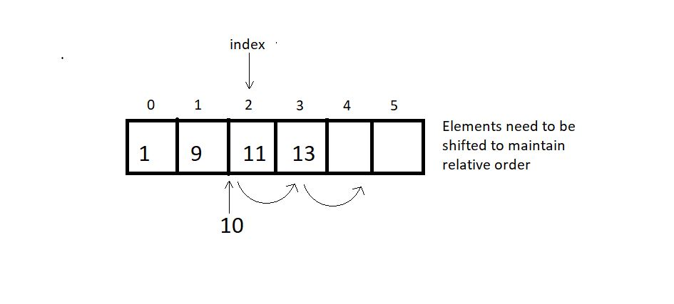
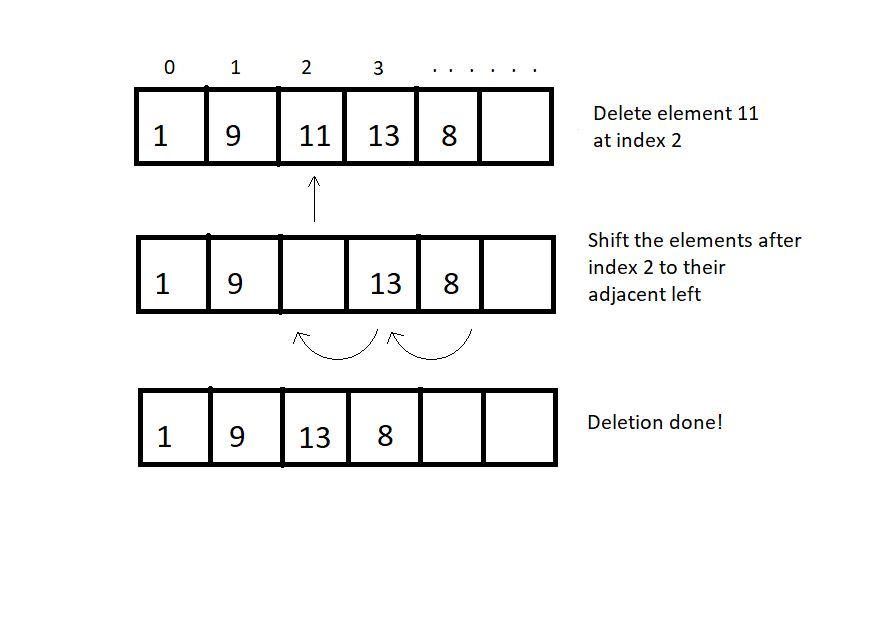
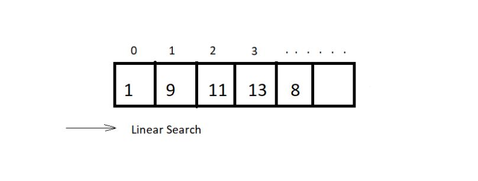
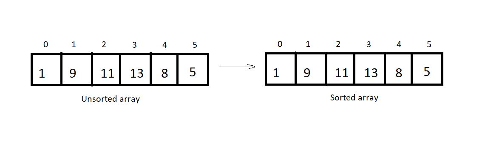

An element can be inserted in an array at a specific position. For this operation to succeed, the array must have enough capacity.
Suppose we want to add an element 10 at index 2 in the below-illustrated array, then the element after index 1 must shifted to their adjacent right to make way for a new element.
 When no position is specified, it's best to insert the element at the end to avoid shifting, and this is when we achieve the runtime O(1).
And for worst case we have to insert the element in 0 index then the runtime will be O(n).
An element at a specified position can be deleted, creating a void that needs to be fixed by shifting all the elements to their adjacent left, as illustrated in the figure below.
We can also bring the last element of the array to fill the void if the relative ordering is not important.

The best case could be deleting the last element with the runtime of O(1) and the worst case would be deleting the first element with the runtime O(n).
Searching can be done by traversing the array until the element to be searched is found. O(n) There is still a better method called binary search. Binary search method only applicable for sorted arrays. Therefore, for sorted arrays, the time taken to
search is much less than an unsorted array. O(logn)

Sorting means arranging an array in an orderly fashion (ascending or descending). We have different algorithms to sort arrays.
